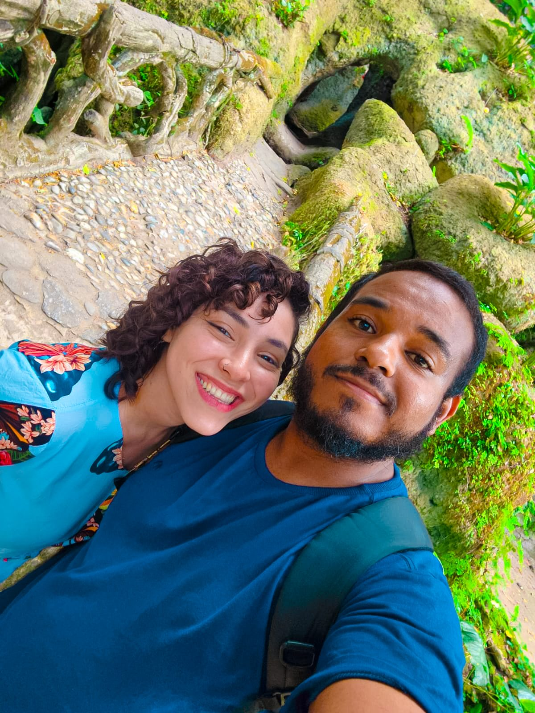
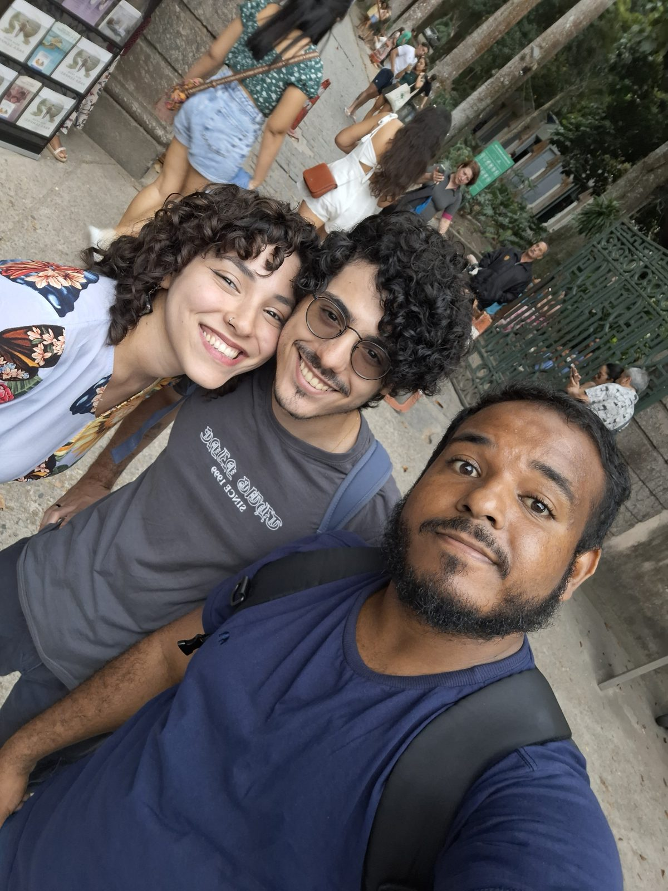
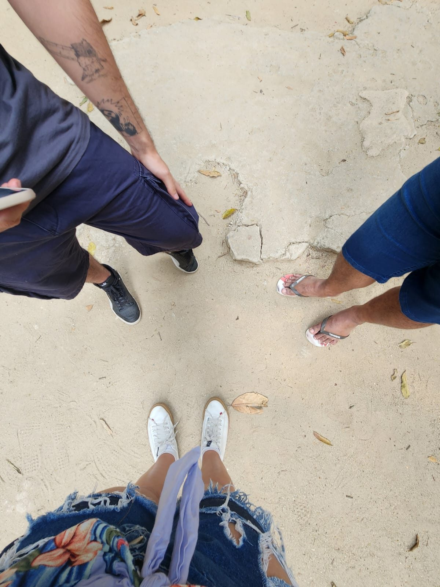

Para a Fabiana, aos 30
Fabiana, você talvez nunca saiba o tamanho disso.
Uma homenagem aos seus 30 anos, à nossa amizade e a tudo pelo que sou grato.
Antes de tudo, feliz aniversário, Fabanes!
Trinta anos.
Uma data tão especial merece mais do que uns simples parabéns, uma mensagem encaminhada ou uma publicação nas redes sociais. E, como estamos falando de você, resolvi fazer algo diferente.
Queria preparar uma homenagem que você pudesse guardar, ler com calma e à qual pudesse voltar algum dia. Algo que falasse da data de hoje, sim, e também do carinho, da admiração e da gratidão que sinto por ter você como minha melhor amiga.
Confesso que não é fácil colocar tudo isso em palavras. Tem sentimento que a gente carrega por tanto tempo que acaba se acostumando com ele. Sabemos que gostamos de alguém, sabemos que aquela pessoa é importante, mas nem sempre paramos para explicar o porquê.
E eu não queria deixar passar seus 30 anos sem fazer isso.
Porque você é uma daquelas pessoas que merecem saber a diferença que fazem na vida de quem está por perto.
Talvez você nem imagine quantas vezes já falei de você para outras pessoas, quantas vezes lembrei de uma atitude sua ou senti orgulho ao acompanhar alguma conquista sua.
E talvez também não imagine quantas vezes me lembrei de uma ajuda que você me deu há bastante tempo e pensei em como sou grato por aquilo.
Por isso, hoje, quero falar de você. Da pessoa que você foi comigo, da amiga que continua sendo, da sua generosidade e de tudo de bom que desejo para essa nova década da sua vida.
Sei que sou péssimo em mandar mensagens com frequência, então considere esta homenagem uma tentativa de compensar, pelo menos um pouquinho, todas as vezes em que eu deveria ter aparecido para conversar e acabei não aparecendo. 😂
Mas, brincadeiras à parte, você merece saber o quanto é especial para mim.
Capítulo I
Uma ajuda que nunca esqueci
Bea, você se lembra de quando me ajudou a comprar um computador?
Talvez você não imagine quantas vezes já pensei naquele momento ao longo dos anos.
Não sei exatamente o que passou pela sua cabeça quando decidiu me ajudar. Talvez tenha sido algo natural para você, porque éramos amigos e estava ao seu alcance.
Mas queria que soubesse que eu nunca enxerguei aquilo como uma coisa pequena.
Aquele computador acabou virando parte de uma história muito maior. Foi importante para os meus estudos, para a minha formação e para as oportunidades profissionais que surgiram depois.
Com o tempo, consegui me formar, conquistar meu primeiro emprego CLT, trabalhar na área da educação e chegar onde estou hoje, como Analista de Planejamento Acadêmico Sênior.
Também vivi experiências que guardo com carinho, como ir ao Rock in Rio em 2024, e comecei a enxergar novas possibilidades para o futuro.
Não conto isso para listar conquistas. Conto porque, quando penso em tudo o que aconteceu depois daquela ajuda, eu lembro de você.
Lembro porque, antes de todas essas coisas, houve uma amiga que estendeu a mão.
Você não tinha obrigação nenhuma. Não precisava assumir aquela responsabilidade. E talvez nem imaginasse quantas vezes eu ainda me lembraria daquele gesto.
Mas você fez.
E eu nunca quero tratar isso como algo que simplesmente aconteceu e ficou para trás.
Se hoje tenho tantas lembranças, oportunidades e experiências na minha história, sei que aquela ajuda tornou parte desse caminho possível.
Por isso, quero te agradecer. Pelo computador, claro, e também pela consideração que havia naquele gesto. Pela disposição de ajudar. Por ter feito diferença quando isso importava.
Obrigado, Fabanes, por ter me ajudado de um jeito que continuou fazendo diferença muito depois daquele momento.
Talvez você nunca tenha a dimensão completa do que isso significou para mim. Mas espero que, lendo estas palavras, consiga perceber ao menos um pouco.
Capítulo II
O valor de ter alguém que estende a mão
Uma das coisas mais bonitas que podemos receber de alguém é a vontade genuína de nos ajudar.
Não precisa ser nada extraordinário aos olhos do mundo, nem vir com grandes discursos ou promessas. Às vezes basta uma atitude que mostra que a gente não está sozinho diante de uma dificuldade.
Acredito que seja por isso que a sua ajuda continua tão viva na minha memória. O que ficou foi o que aquele gesto representou: uma demonstração de amizade que levei comigo ao longo dos anos.
A vida adulta vai trazendo responsabilidades, compromissos, preocupações e mudanças. Cada um começa a enfrentar as próprias dificuldades, construir os próprios planos e lidar com os desafios que aparecem pelo caminho.
Nem sempre conseguimos estar tão próximos quanto gostaríamos. A rotina toma conta, o tempo passa e, quando percebemos, já faz muito tempo desde a última conversa.
Mas algumas coisas continuam tendo valor, mesmo quando não são lembradas todos os dias.
A gratidão é uma delas.
Eu não preciso me lembrar daquela ajuda diariamente para continuar grato por ela. Não preciso falar disso em todas as conversas para reconhecer a importância que teve.
Mas hoje, no seu aniversário, tenho a chance de dizer tudo isso com clareza. E quero aproveitar, porque você merece esse reconhecimento.
Quero que saiba que sua generosidade não passou despercebida.
Quero que saiba que eu me lembro.
E quero que saiba que, para mim, reconhecer a importância de uma pessoa também é fazer questão de que ela conheça o bem que fez.
Obrigado por ter sido essa amiga.
Obrigado por ter estendido a mão.
Obrigado por ter feito algo que guardo com tanto carinho até hoje.
Capítulo III
Minha melhor amiga, mesmo quando sou péssimo em demonstrar

Agora precisamos falar sobre a nossa amizade e sobre uma das minhas maiores falhas como amigo: a frequência das minhas mensagens.
Porque, convenhamos, eu poderia ser muito melhor nisso. 😂
Sou aquele amigo que passa um tempão sem mandar mensagem, que às vezes demora a aparecer e que provavelmente deveria ter perguntado como você estava várias vezes antes de finalmente resolver escrever uma homenagem de aniversário com capítulos, subtítulos e tudo mais.
Se existisse avaliação de desempenho para manter contato, eu ia precisar de bastante treinamento.
Mas quero deixar uma coisa clara. Reconheço que poderia ser mais presente, e isso em nada diminui a importância que a nossa amizade tem para mim.
Não quero usar esta homenagem para justificar ausência. Só quero admitir que nem sempre consigo demonstrar carinho do jeito, ou na frequência, que gostaria.
E, ainda assim, tem algo que continua muito presente: a consideração que tenho por você.
Você é minha melhor amiga. Alguém cuja história acompanho com interesse, cujas conquistas me deixam feliz e por quem torço sinceramente.
Talvez eu não esteja em todas as conversas, nem saiba de cada novidade na hora em que acontece. Talvez você tenha muito mais histórias para me contar do que eu imagino.
Mas gosto de saber que você está vivendo suas experiências, realizando seus projetos e construindo sua própria história. E gosto de acompanhar parte disso, mesmo que muitas vezes de longe.
Nossa amizade tem um lugar importante na minha vida, e sou grato por ela. Pelas lembranças que dividimos, pela confiança construída ao longo do tempo e pela sorte de ter você como amiga.
Se eu pudesse melhorar alguma coisa nessa relação, certamente seria aparecer mais, conversar mais e mostrar com mais frequência o quanto valorizo essa amizade.
Você merece esse cuidado.
E espero conseguir demonstrá-lo cada vez melhor, não só em aniversários, mas também nos dias comuns, quando nenhuma data especial está ali nos lembrando de dizer o que sentimos.
Capítulo IV
Você talvez não saiba, mas eu falo muito de você
Essa é uma das coisas que eu mais queria que você soubesse.
Eu falo de você para as pessoas que conheço. E não é só mencionar seu nome numa conversa ou contar de passagem que tenho uma amiga chamada Fabiana.
Quando surge a oportunidade de falar da sua importância na minha vida, faço isso com um orgulho enorme.
Às vezes começo pela ajuda que você me deu. Em outras, falo de algo que você conquistou, de um projeto seu ou de alguma novidade que acompanhei.
E, quando vejo, estou contando a história com aquele brilho no olho que aparece quando falamos de alguém por quem temos muita consideração. É uma mistura de emoção, orgulho e gratidão.
Não é exagero meu. Eu realmente reconheço o valor da sua presença na minha vida.
Gosto de falar bem de você.
Gosto de reconhecer o que fez por mim.
Gosto de poder dizer que tenho uma amiga que me ajudou num momento importante e cuja atitude continuou fazendo diferença ao longo dos anos.
E acho que você merece saber disso, porque nem sempre as pessoas descobrem o que representam para os outros. Às vezes alguém nos considera importante durante anos sem nunca dizer isso diretamente. Às vezes a nossa contribuição na vida de alguém é muito maior do que imaginamos.
Eu não queria que você chegasse aos 30 sem saber, com todas as letras, que existe alguém que se lembra de você com muito carinho e que fala da nossa amizade com orgulho.
Não sei quantas vezes você já ouviu alguém contar uma história sobre você e dizer que ficou feliz por te conhecer. Mas espero que, daqui para a frente, nunca tenha dúvida de que eu faço questão de reconhecer o quanto sou grato por ter você na minha vida.
Capítulo V
O fã da arquibancada do Instagram
Sei que já mencionei minha falta de habilidade para mandar mensagens, mas preciso apresentar mais uma evidência de que sou um amigo meio peculiar.
Sou seu big fã e acompanho suas novidades praticamente da arquibancada do Instagram.
Estou ali, vendo as publicações, acompanhando as conquistas e torcendo para que as coisas deem certo.
Talvez eu não comente tudo nem responda a todos os stories. Talvez você publique alguma novidade sem imaginar que, do outro lado da tela, tem um amigo feliz por você.
Mas tem.
E essa torcida não é formalidade.
Quero que seus projetos deem certo. Quero que você encontre boas oportunidades, que seu trabalho seja reconhecido e que tenha motivos para sentir orgulho do que está construindo. Quero ver você realizando seus objetivos e vivendo experiências que façam sentido para quem você é.
E, quando alguma coisa boa acontece, fico genuinamente feliz por você.
Não preciso estar envolvido em cada projeto para reconhecer seu valor, nem entender todos os detalhes de cada conquista para torcer por ela. Basta saber que é importante para você. Isso já me faz querer que dê certo.
Então considere esta homenagem também o registro oficial de um fã que talvez seja silencioso demais, mas que está sempre torcendo. Um fã que não precisa estar na primeira fila para comemorar suas conquistas, que acompanha as novidades, sente orgulho e deseja que a vida continue trazendo coisas boas para você.
Bia, você tem um torcedor fiel aqui. Só precisamos melhorar o canal de comunicação entre a arquibancada e o campo. 😂
Capítulo VI
Fabiana e Matheus: que a vida seja generosa com vocês

Fabanes, eu não poderia fazer esta homenagem sem falar também do Matheus KIWIIIIIIIIIIIIIIII.
Quero que vocês saibam que eu torço muito pelos dois.
Desejo que essa caminhada seja cheia de felicidade, saúde, companheirismo e oportunidades. Que vocês consigam realizar os planos que têm, superar as dificuldades que aparecerem e aproveitar as coisas boas da vida.
Espero que tenham muitas histórias bonitas para contar, muitos lugares para conhecer e muitas conquistas para comemorar juntos. Que não faltem motivos para rir, momentos de tranquilidade e gente boa por perto.
E que os objetivos de cada um também encontrem espaço para crescer.
Quero que você seja feliz, Bea. E fico feliz em desejar isso também para alguém que faz parte da sua vida e da sua história.
A gente não precisa estar presente em todas as etapas da vida de alguém para desejar sinceramente que as coisas deem certo. E eu desejo isso para vocês.
Torço para que essa nova década traga experiências maravilhosas, novas possibilidades e muitas realizações. Que vocês encontrem motivos para olhar para trás com orgulho e para a frente com entusiasmo, e que não faltem saúde, respeito, parceria e felicidade.
Vocês merecem muitas coisas boas. E daqui existe uma torcida sincera pelos dois.
Capítulo VII
Uma gratidão que não cabe em uma conta
Tem uma coisa que ainda sinto quando penso naquela ajuda: a vontade de conseguir mostrar o quanto sou grato.
Às vezes tenho a impressão de que nunca consegui expressar isso como gostaria.
E não é porque eu ache que você fez algo esperando receber alguma coisa em troca. Pelo contrário. É justamente porque sua ajuda foi importante para mim que sinto vontade de reconhecê-la.
Sei que amizade não funciona como dívida. Não existe um valor exato a devolver, nem obrigação de transformar cada gesto de generosidade numa troca equivalente.
E não quero que você veja esta homenagem desse jeito. Não estou tentando compensar uma coisa antiga, muito menos transformar a nossa amizade numa conta a ser acertada.
Quero só reconhecer o que recebi. Dizer obrigado por uma atitude que fez diferença e que continuo valorizando.
E quero que saiba que, se algum dia você precisar de mim, eu também quero ser alguém com quem você possa contar.
Ainda tenho muito a melhorar na forma de demonstrar presença e carinho. Sei que posso ser mais atencioso, aparecer mais e não deixar tanto tempo passar entre uma conversa e outra.
Mas quero que a nossa amizade seja também um espaço de apoio, consideração e reciprocidade. Não para pagar pelo que você fez, e sim porque amizades importantes merecem ser cuidadas. Espero conseguir fazer isso cada vez melhor.
Nem sempre conseguimos devolver diretamente a alguém tudo de bom que recebemos. Mas podemos reconhecer o valor do gesto, guardá-lo com carinho e deixar que ele nos ensine a olhar para os outros com mais generosidade.
Você me deu uma ajuda importante num momento da minha vida. Hoje, posso ao menos fazer questão de que saiba que ela não foi esquecida.
Capítulo VIII
O que desejo para os seus 30 anos
(além de muitos banhos, porque… né, Bia?)
Agora quero deixar um pouco de lado as lembranças e falar do que desejo para você.
Trinta anos são uma chance de celebrar tudo o que já foi vivido e, ao mesmo tempo, abrir espaço para o que ainda está por vir. Por isso, desejo que esta nova década seja generosa com você.
- Que tenha saúde para aproveitar as coisas boas, tranquilidade para enfrentar os desafios e coragem para continuar buscando o que deseja.
- Que seus projetos encontrem oportunidades para crescer.
- Que seu trabalho seja reconhecido e que você encontre satisfação naquilo que escolher fazer.
- Que nunca faltem pessoas dispostas a celebrar suas conquistas, a te apoiar nos dias difíceis e a te lembrar do seu próprio valor quando as coisas não saírem como planejado.
- Que tenha tempo para descansar, conhecer lugares, experimentar coisas novas e aproveitar os momentos simples que deixam a vida especial.
- Que realize sonhos antigos e descubra novos motivos para sonhar.
- Que você e o Matheus tenham muitas experiências bonitas para dividir.
- Que sua família tenha saúde, que suas amizades sejam cuidadas e que sua vida esteja cheia de gente que te faz bem.
E, acima de tudo, desejo que você tenha motivos para se sentir feliz com a pessoa que é e com o caminho que está construindo.
Não sei quais serão as grandes conquistas dessa década, que surpresas a vida vai trazer ou quais sonhos ainda vão ganhar forma. Mas espero que, quando chegar aos 40, você olhe para os seus 30 com carinho e reconheça que viveu uma fase cheia de aprendizados, experiências e momentos importantes.
Você merece uma década bonita. E espero que ela seja ainda melhor do que você imagina.
Capítulo IX
Obrigado por fazer parte da minha história
Fabi, se tem uma coisa que eu queria que você levasse desta homenagem, é a certeza de que sua amizade e sua generosidade são muito valorizadas.
Talvez você nunca tenha imaginado que uma ajuda de alguns anos atrás seria lembrada assim. Talvez tenha feito aquilo sem pensar em tudo o que viria depois.
Mas eu me lembro. Lembro da ajuda, reconheço o que ela significou e sou grato por você ter feito parte daquele momento.
E nem é só sobre o computador. É sobre a amizade que existe por trás dessa lembrança, a consideração que recebi e a chance de reconhecer, tantos anos depois, o quanto aquela atitude foi importante.
Obrigado por ter estendido a mão.
Obrigado por ter contribuído para uma etapa importante da minha vida.
Obrigado por ser uma amiga cuja generosidade continuo lembrando com carinho.
Obrigado por todas as lembranças que dividimos e pela amizade que construímos.
E obrigado por ser alguém de quem posso falar com tanto orgulho.
Não sei se um dia vou conseguir expressar perfeitamente tudo o que gostaria. Mas espero que esta homenagem transmita uma parte dessa gratidão.
Você não precisa fazer nada em troca. Não precisa responder com um texto do mesmo tamanho, preparar uma homenagem para mim ou encontrar um jeito equivalente de retribuir.
Hoje eu só quero celebrar você, reconhecer a sua importância e desejar que a sua nova década seja maravilhosa. Aniversários também servem para dizer às pessoas o que, na correria do dia a dia, nem sempre conseguimos dizer.
E eu não queria deixar seus 30 anos passarem sem dizer o quanto sou grato pela nossa amizade.
Capítulo X
Feliz 30 anos, minha melhor amiga!
Chegamos ao fim desta homenagem. Se você leu até aqui, espero que tenha percebido o carinho com que ela foi feita.
Posso ser péssimo em mandar mensagens, mas aparentemente compenso escrevendo um livro inteiro quando resolvo colocar alguma coisa no papel. Ou, neste caso, na internet. 😂
Brincadeiras à parte, espero que você se sinta querida, reconhecida e feliz por saber que existe alguém que guarda com tanto carinho uma atitude sua de tantos anos atrás.

Que seus 30 anos sejam cheios de saúde, felicidade, realizações e boas surpresas.
Que você continue encontrando motivos para se orgulhar do seu trabalho, dos seus projetos, das suas escolhas e da pessoa que está se tornando.
Que você e o Matheus tenham uma caminhada muito feliz, cheia de parceria, respeito e experiências bonitas.
Que nunca faltem bons amigos, boas conversas, boas risadas e pessoas que saibam reconhecer o seu valor.
E que, mesmo com a correria da vida adulta, a gente continue tendo oportunidades de conversar, trocar histórias e comemorar as conquistas um do outro. Quero continuar acompanhando suas novidades, torcendo pelos seus projetos e vibrando com as coisas boas que acontecerem na sua vida.
E prometo tentar melhorar minha frequência de mensagens. Milagre eu não prometo, porque precisamos respeitar as limitações técnicas do sistema. 😂
Mas, acima de tudo, quero agradecer.
Obrigado pela sua amizade.
Obrigado por aquela ajuda que nunca esqueci.
Obrigado por ter feito diferença num momento importante da minha vida.
E obrigado por me dar a chance de celebrar seus 30 anos com esta homenagem.
Feliz aniversário, Fabiana! Que a vida te devolva em felicidade e oportunidades muito do bem que você já fez às pessoas ao seu redor.
Que essa nova década seja incrível, que seus sonhos encontrem caminhos para se realizar e que você e o Matheus tenham muitos motivos para comemorar.
Receba um abraço enorme, todo o meu carinho e a gratidão sincera de um amigo que talvez demore para mandar mensagem, mas que faz questão de reconhecer a importância da nossa amizade.